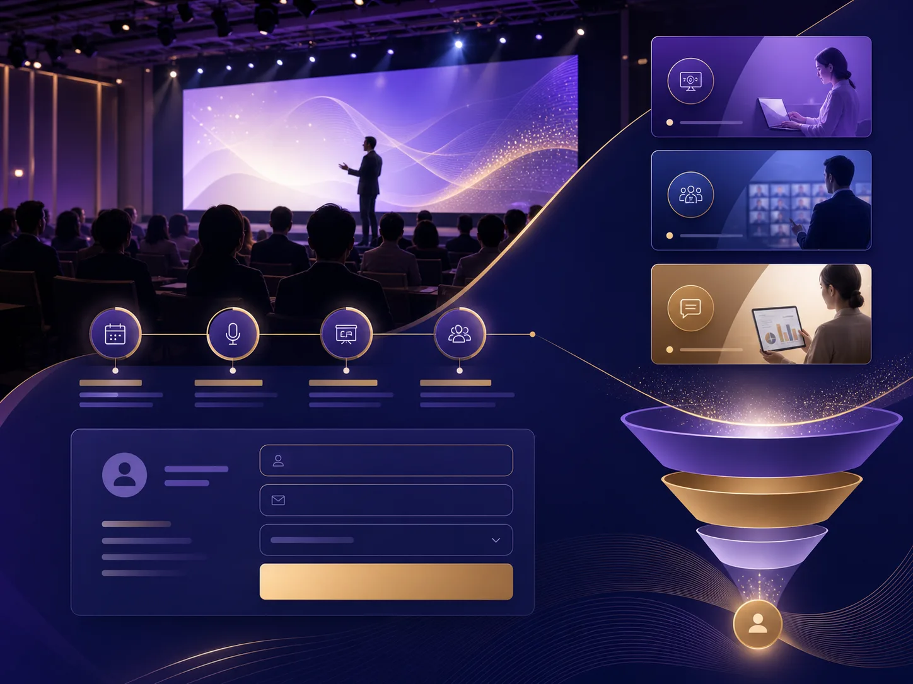

Industry Guide — Seminar
セミナー・説明会LPに必要な要素とは?申込までの導線を解説
セミナー・説明会LPは、開催日という締切のあるイベントに、迷わず申し込んでもらうための1ページです。この記事では、必要な要素、結論を先に伝えるべき理由、申込直前の離脱を防ぐ工夫を解説します。
セミナーLPとは何か?何を目的にするページか?
セミナーLPは、特定の開催日・特定の対象者に向けて「参加するかどうか」だけを判断してもらうための1ページです。会社案内や過去の活動全体を紹介するのではなく、この1回の開催に絞って情報を設計します。
通常のサービスLPと違い、開催日という締切があるため、申込の判断を先延ばしにされると、そのまま機会を逃してしまいます。「今すぐ判断してもらう」ことを前提に、情報の順番を組み立てる必要があります。
セミナー・説明会LPに必要な要素とは?
セミナーLPは「結論」「登壇者・信頼性」「当日情報・申込」の3ブロックで構成します。結論のブロックで参加メリットと開催日時を先に示し、興味を持った人が離脱する前に信頼性の裏付けを見せる順番にします。
| 要素 | 目的 | 含める内容の例 |
|---|---|---|
| 結論 | 参加して得られることを最初に言い切る | 参加メリット・対象者・開催日時と会場を一目で |
| 登壇者・信頼性 | 誰から学べるのかを示し、参加の価値を裏付ける | 登壇者の経歴・実績、過去開催の様子や声 |
| 当日情報・申込 | 参加をその場で決めてもらう | 日時・会場(またはツール)・料金・定員・申込フォーム |
なぜ結論を最初に伝えるべきなのか?
通常の物語のように「起・承・転・結」の順で背景から説明すると、参加メリットが伝わる前に離脱されてしまいます。セミナーLPでは、結論(参加して得られること)を最初に示し、その後で登壇者の信頼性や当日の詳細を補強する順番が有効です。
これは、セミナーへの参加を検討する人の多くが「忙しい時間を割く価値があるか」を最短で判断したいと考えているためです。背景や経緯を丁寧に説明したくなる気持ちは分かりますが、それは結論を伝えた後、登壇者・信頼性のブロックで補う形にします。
申込直前の離脱を防ぐには何が必要か?
日時・会場(またはオンラインツール)・料金・定員を、本文の途中ではなく申込フォームの直前に改めて明記することで、スケジュールの都合を確認しようとして離脱するのを防げます。
よくある離脱の原因は、「面白そうだけど、その日空いているか分からない」という一時保留です。開催日時を何度も曖昧なまま進めるのではなく、ページの早い段階と申込直前の両方で、同じ情報を繰り返し明記することが効果的です。
制作例

上記は導線デベロッパーで作成したセミナー・説明会LPの制作例(デザインサンプル)です。実際の案件では、開催形式(会場かオンラインか)や参加費の有無に合わせて、構成を個別に設計します。
よくある質問
- 無料セミナーと有料セミナーでLPの作り方は変わりますか。
- 有料セミナーは「参加費に見合う価値があるか」を具体的に示す必要があり、費用対効果の説明が重要になります。無料セミナーは参加ハードルが低い分、対象者を明確にしないと関係のない人まで集まってしまう点に注意が必要です。
- オンライン開催と会場開催で構成は変わりますか。
- 会場開催は地図・アクセス・持ち物などの案内が必須になります。オンライン開催は使用ツール(Zoomなど)の操作案内や、当日参加できない場合の録画配布の有無を明記すると、申込の不安を減らせます。
- 登壇者の実績がまだ少ない場合はどうすればいいですか。
- 実績の数を強調するより、なぜこのテーマで登壇するのか、どんな経験からこの内容を伝えたいのかを具体的に語る方が、実績が少ない段階でも説得力を補いやすくなります。
セミナー・説明会LPの構成や、申込率の改善について相談したい場合は、15分のヒアリングから承っています。成果を保証するものではありませんが、申込までの導線を一緒に整理します。
制作相談